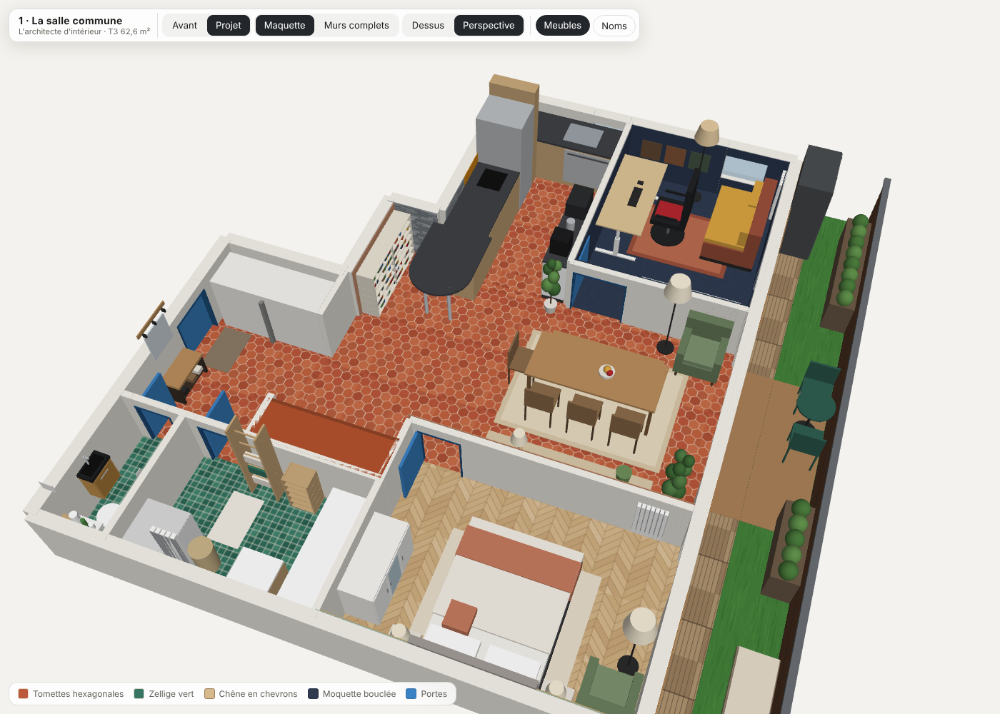
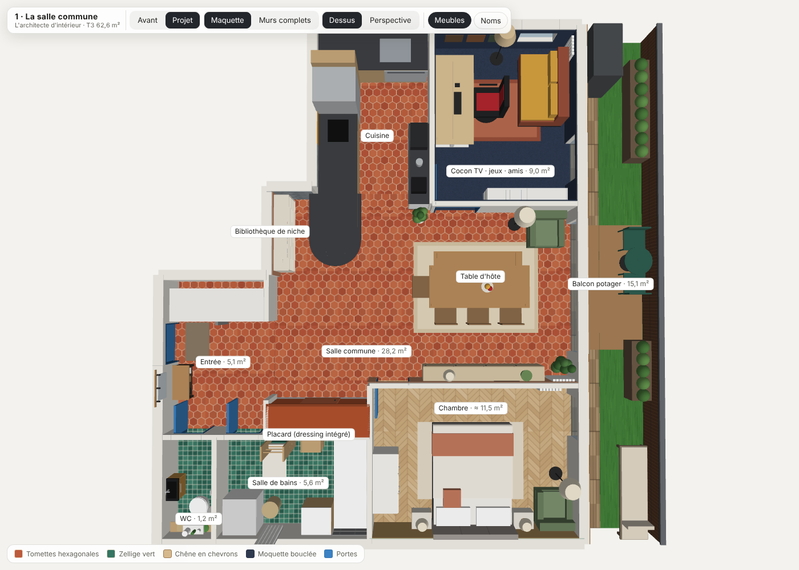

L'architecte d'intérieur · n° 1
La salle commune
Le séjour redevient une salle commune à l'ancienne : une grande table d'hôte en chêne, qui sert aux repas, au travail, aux jeux et à l'apéro, un buffet et une bibliothèque, sans canapé ni télé.
PiècesSéjour = cuisine + salle commune. Ch. 1 = chambre. Ch. 2 = cocon TV-jeux-amis. Placard du couloir = dressing. Balcon = potager et café du matin.